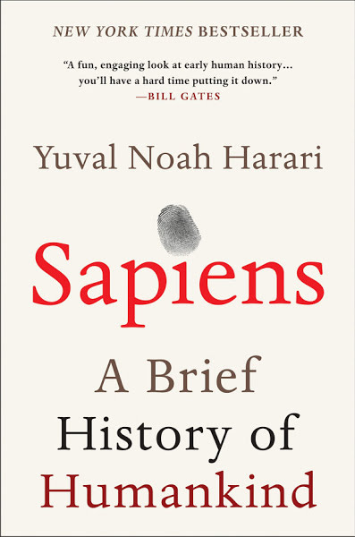
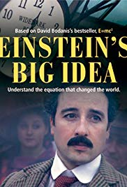

Khalil Elkhalil
I am a Tunisian engineer working as a postdoctoral fellow at Duke Microsoft Innovation Hub where I investigate topics related to Deep Learning under the supervision of Prof. Vahid Tarokh.


Education
GPA: 3.96/4.0

GPA: 14.79/20
Journals
- Risk Convergence of Centered Kernel Ridge Regression with Large Dimensional Data
- A Large Dimensional Study of Regularized Discriminant Analysis Classifiers
- Measurement Selection : A Random Matrix Theory Approach
- Fluctuations of the SNR at the output of the MVDR with regularized Tyler estimators
- Numerically Stable Evaluation of Moments of Random Gram Matrices with Applications
- On the Feedback Reduction of Multiuser Relay Networks Using Compressive Sensing
- Analytical Derivation of the Inverse Moments of One-Sided Correlated Gram Matrices With Applications
- Opportunistic Relay Selection With Limited Feedback
K. Elkhalil, A. Kammoun, X. Zhang, M. S. Alouini and T. Al-Naffouri [arxiv] [PDF] [code]
K. Elkhalil, A. Kammoun, R. Couillet, T. Y. Al-Naffouri and M. S. Alouini [arxiv] [PDF] [code]
K. Elkhalil, A. Kammoun, T. Y. Al-Naffouri and M. S. Alouini [arxiv] [PDF]
K. Elkhalil, A. Kammoun, T. Y. Al-Naffouri and M. S. Alouini [arxiv] [PDF]
K. Elkhalil, A. Kammoun, T. Y. Al-Naffouri and M. S. Alouini [arxiv] [PDF]
K. Elkhalil, M. E. Eltayeb, A. Kammoun, T. Y. Al-Naffouri and H. Bahrami [arxiv] [PDF]
K. Elkhalil, A. Kammoun, T. Y. Al-Naffouri and M. S. Alouini [arxiv] [PDF]
M. E. Eltayeb, K. Elkhalil, H. Bahrami and T. Y. Al-Naffouri [IEEE]
Conferences
- Asymptotic Performance of Linear Discriminant Analysis with Random Projections
- Regularized Discriminant Analysis: A Large Dimensional Study
- Asymptotic Performance of Regularized Quadratic Discriminant Analysis Based Classifiers
- A Blind Antenna Selection Scheme for Single-Cell Uplink Massive MIMO
- Exact Closed-Form Expression for The Inverse Moments of One-Sided Correlated Gram Matrices
- Block Compressed Sensing for Feedback Reduction in Relay-Aided Multiuser Full Duplex Networks
- Distributed User Selection in Network MIMO Systems with Limited Feedback
- Relay Selection with Limited and Noisy Feedback
- Opportunistic Relay Selection in Multicast Relay Networks using Compressive Sensing
- Joint Channel Estimation and Decision Directed Decoding for OFDM-IDMA Systems over Sparse Channels
K. Elkhalil, A. Kammoun, R. Calderbank, T. Y. Al-Naffouri and M. S. Alouini [PDF] [code]
Xiaoke Yang, K. Elkhalil, A. Kammoun, T. Y. Al-Naffouri and M. S. Alouini [IEEE] [PDF] [Slides] [code]
K. Elkhalil, A. Kammoun, R. Couillet, T. Y. Al-Naffouri and M. S. Alouini [IEEE] [PDF] [Poster]
K. Elkhalil, A. Kammoun, T. Y. Al-Naffouri and M. S. Alouini [IEEE] [PDF] [Poster]
K. Elkhalil, A. Kammoun, T. Y. Al-Naffouri and M. S. Alouini [IEEE] [PDF] [Slides]
K. Elkhalil, M. Eltayeb, A. Kammoun, T. Y. Al-Naffouri and H, Bahrami [IEEE] [PDF] [Poster]
K. Elkhalil, M. Eltayeb, H. Dahrouj and T. Y. Al-Naffouri [IEEE] [PDF] [Slides]
M. Eltayeb, K. Elkhalil, A. Mas'ud and T. Y. Al-Naffouri [IEEE]
K. Elkhalil, M. Eltayeb, H. Shibli, H. Bahrami and T. Y. Al-Naffouri [IEEE] [PDF]
K. Elkhalil, L. Najjar and Hichem Besbes [PDF]
Interests
Apart from research, I enjoy watching movies and reading books. I have just completed reading a book that has to some extent changed the way I look to the world, it is called "Sapiens" a masterpiece of the legendary Yuval Noah Harari . Although, it seems intimidating to most people, it studies the human history from a completely rational view. I don't want to spoil the book, so it is for you to go and read it. Now, I am onto a new adventure with another exceptional author Tara Westover and her book "Educated" which describes her uncommon educational journey. Here is my reading list:



I also like watching documentaries from time to time. I still remember the first documentary I watched: "Einstein's big idea" broadcasted in 2005 celebrating 100 years after Einstein's special relativity. It is still a good one, go and watch it if you didn't; you will discover many other brilliant scientists such as Faraday, Lavoisier, Lise Meitner and Emilie du Chatelet. This is how I developed a passion for science.

I am a big fan of Fairuz the diva of Lebanon. Nothing better than listening to Fairuz in the early morning 😁

Awards & Certifications
- 1st Place - National entrance examination to the Ecole Normale Superieure de Tunis, 2009
- KAUST Graduate Fellowship
- Finalist for the best student paper award in IEEE MLSP conference 2017